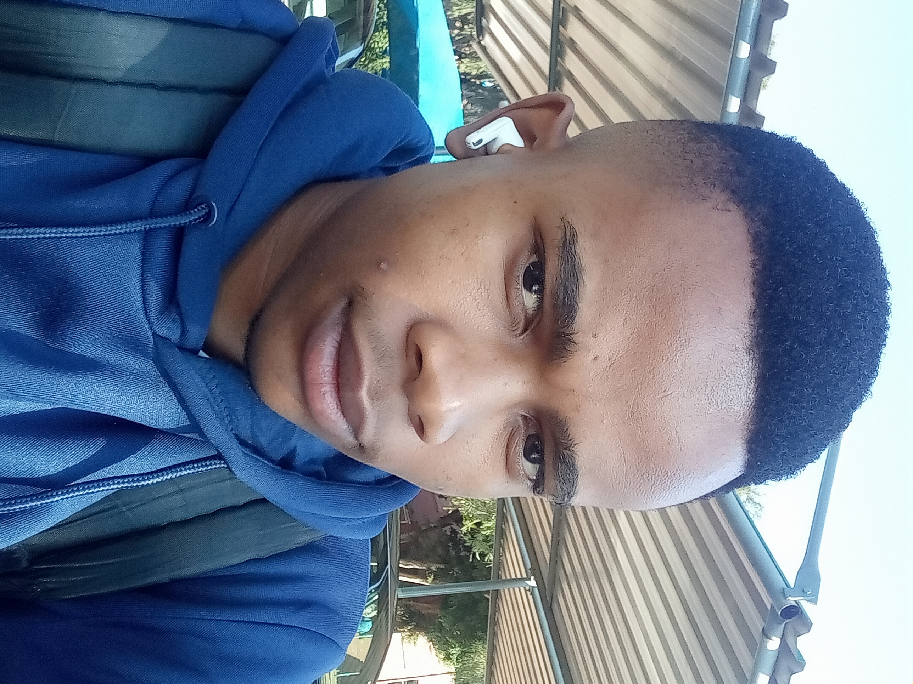

Professional Summary (About)

I'm a hands-on engineer who ships production systems. I care about correctness, maintainability, and product impact. I enjoy building payment flows, backend s ervices, and developer tools. I'm comfortable with full-stack work and can own features end- to-end — from database schema to UX.
I am a software-focused robotics and embedded systems developer with a strong interest in control logic, automation, and real-world system behavior. I enjoy translating practical work-case scenarios—such as access control, safety monitoring, scheduling, and resource management—into reliable, rule-based software systems. My strengths lie in logic-heavy backend and embedded programming, including finite state machines, event-driven design, and fault-aware control systems. I am particularly interested in robotics software, automation, and cyber-physical systems, where software decisions directly affect real-world outcomes. I build projects that simulate and control real environments (e.g., smart facilities, agriculture systems, autonomous supervisors) before integrating with hardware, prioritizing correctness, safety, and maintainability over UI-centric development. My long-term goal is to work as a Robotics Software Engineer or Embedded Systems Developer, contributing to intelligent systems in areas such as agriculture, industrial automation, and autonomous platforms.